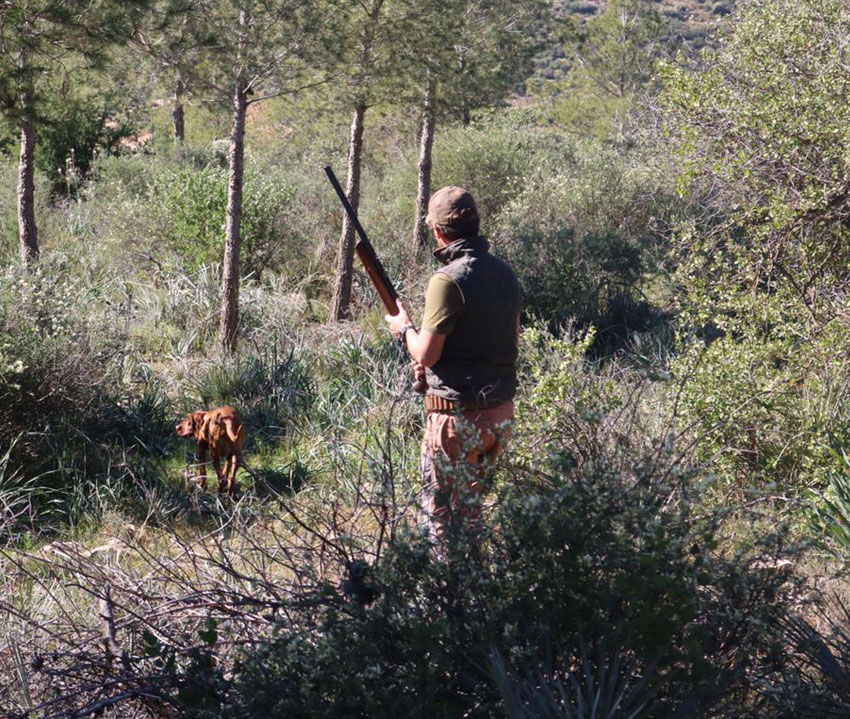
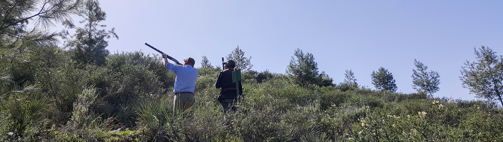
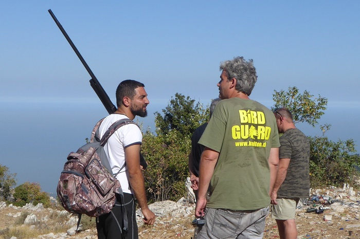

Guns return to some open country and stay silent in others… Nine Arab states meet the autumn migration with nine different hunting maps
With the first shift in the late-summer air, a scene every Arab hunter knows begins to form.
From the Atlas foothills in Morocco and Algeria, through Tunisia’s woodlands, Libya’s coasts, and Egypt’s marshes, then along the great eastern flyway through Lebanon, Syria, and Jordan, out to the deserts of Saudi Arabia and the Red Sea shore, birds move south—and with them moves the memory of a whole season of waiting.
This is migration autumn.
It is not, necessarily, hunting autumn everywhere.
At the end of September 2026, the Arab hunting map looks like a mosaic of systems, dates, and limits: Saudi Arabia entered its season at the start of September; Jordan opened defined seasons for named species; Morocco and Tunisia prepare for an opening on 4 October; in Lebanon, wild hunting remains closed because no official open-season decision has been issued. And in Libya, autumn itself brought the opposite kind of decree in parts of the southeast: protect migrants and ban hunting them.
So the journey from the Atlas to the Red Sea is not only a journey between countries. It is a journey between wholly different ways of handling hunting, migration, and wildlife.
Morocco: the first Sunday in October returns hunters to the field
On the Atlas slopes, among forests and plains that shaped one of North Africa’s deepest hunting cultures, the date is set.
The Higher Council for Hunting fixed Sunday, 4 October 2026, as the official opening of the 2026–2027 hunting season across Morocco. The decision followed an assessment of the 2025–2026 season and the state of the national game stock, within a policy that ties continued hunting to managing species and habitats.
Morocco is not a small hunting market. Last season, more than 65,000 hunters practised in open and leased domains, plus about five thousand in tourist hunting.
That figure explains part of the scene that returns with every opening: hunting associations, hounds, partridge, leased and prepared land, and a standing tourist-hunting sector that receives shooters from abroad.
But 4 October does not make every bird fair game. The annual decision sets species, periods, and bags; turtle dove stays outside the general opening and keeps its own seasonal calendar.
From here the journey turns east.

Algeria: no single opening day for a country the size of a continent
Cross the Moroccan border and the rule changes.
In Algeria one should not look for a single “national opening day” in the Moroccan style. The law ties hunting schedules to quarry species and wilaya; decisions come from wilaya authorities, with biological rest periods taken into account. The Prime Minister’s office confirmed that principle officially in its clarification on the 2025–2026 season.
As of late September 2026, no unified national opening announcement comparable to Morocco’s—fixing a single national opening date for 2026–2027—has been published.
That is not an administrative quibble. For the hunter it means the right question in Algeria is not “When does the season start?” but: In which wilaya? For which quarry? Under which decision?
From northern forests to the high plateaus, the local decision becomes part of the hunter’s kit—alongside gun and dog. That a species may be hunted in one place does not make it lawful somewhere else.
Tunisia: also 4 October… but on a densely detailed calendar
Across the Algerian border, the picture is clearer.
Tunisia’s Ministry of Agriculture, Water Resources and Fisheries issued its decision regulating the 2026–2027 season, published in the Official Gazette.
On 4 October 2026, hunting of wild rabbit, partridge, resident quail, rock dove, and sandgrouse (“kudra”) opens and runs to 6 December, limited to Sundays, public holidays, and official leave days.
Waterbirds keep another clock.
Woodpigeon and a wide set of waterfowl do not open until 22 November 2026, running to 28 March 2027. The list includes ducks, teal, geese, coot and others, with special rules for waterbird hunting on “the pass.”
This detail states a principle that repeats across the Arab map: migration does not open the season; the legal decision does.
The sky may fill with birds long before the law allows a single shot.

Libya: autumn arrives this time with a protection order
Farther east, the scene grows more complex.
In Libya—where desert, wetlands, and coastal corridors form parts of the Europe–Africa flyways—September 2026 brought news unlike the usual season openings.
On 20 September, the Libyan Authority for Heritage and Wildlife announced a ban on hunting migratory birds in several southeastern areas after declines in numbers and hunting practices described as wrongful and abusive.
The measure covered Jalu, Awjila and Jikhra (Ijkhira) and other zones out to Tazirbu and Kufra, protecting the natural corridors linked to them, for two consecutive migration seasons (passage and return).
So while Moroccan and Tunisian hunters prepare for 4 October, a hunter in parts of Libya faces a different sign: birds pass here, but passage is not permission.
It is one of the sharpest paradoxes of the Arab 2026 season.
Egypt: when quail reach the coast
Then the road reaches Egypt.
Here autumn is visible on the Mediterranean shore, in the Delta, and on the northern lakes. Quail, garganey and other migratory birds make Egypt one of the known stops on the Eurasia–Africa flyway.
In September 2026, the 2026–2027 bird-hunting season had already opened within the legal hunting frame—including wild quail, garganey, and other species expressly authorized under the governing ministerial decree. Turtle dove is not listed here among the expressly authorized species. The message that accompanied the start was plain: opening the season is not opening hunting without limits.
Some species are allowed, others protected; practice is regulated; the stated aim is to keep hunting possible without turning the yearly migration into depletion.
Egypt especially shows how hard that balance is. Its position makes it a vast geographic bridge for migrants—from the Mediterranean coast and Lake Bardawil to the Delta, Fayoum, and beyond.
Here the line between the lawful hunter and random shooting is more than wording; it is the difference between a season that can return and a resource that can vanish.
Lebanon: the birds arrived… but the season did not open

From Egypt to the eastern Mediterranean, we reach the most sensitive case.
Lebanon sits on one of the region’s major bird-migration corridors. In autumn large numbers of migrants cross its skies.
But as of 29 September 2026, no official decision has opened the 2026–2027 wild-hunting season.
Wild hunting therefore remains prohibited until the legal decision that opens the season is issued.
This is not theory. On 14 September the Internal Security Forces announced the arrest of three people in Danniyeh as part of efforts against abusive wild hunting and for protecting migratory birds.
Lebanon’s terrestrial hunting law No. 580 of 2004 provides that opening and closing the season, and the quarry list, fall to the Minister of Environment on a proposal from the Higher Council for Hunting; the season does not open automatically with the arrival of autumn.
So a Lebanese hunter may see autumn flocks over mountains and valleys, yet quarry overhead does not make a season.
The law does.
Syria: birds return before the regulatory picture is complete
Northward, migrants cross Syrian land—from the coast to inland plains and wetlands.
Scattered field reports point to ongoing terrestrial hunting in some areas, alongside crackdowns on illegal hunting elsewhere, without that translating into a clear published national calendar for autumn 2026–2027.
As of late September 2026, the published regulatory picture remains incomplete: no recent, reliable central decision has set a national Syrian calendar for autumn 2026–2027 with the clarity available for Morocco, Tunisia, or Saudi Arabia.
Hunting on the ground is one thing; a published legal season with limits, species, and dates is another. What has not been published officially stays outside the confirmed calendar map.
Jordan: ten birds per outing… and partridge stays closed
In Jordan the precise numbers return.
On 18 September 2026 an autumn season opened for defined pigeon species, running to 29 November, on Fridays and Sundays only, in permitted areas west of the Hejaz railway.
The Wildlife Protection Committee set a ceiling of 10 pigeons of the allowed species per licensed hunter per outing, excluding speckled pigeon because of declining numbers.
Most important: opening pigeons did not become a general open season.
The committee kept partridge and sand partridge closed. Call devices and nets are banned, night hunting is banned, and a licence plus compliance with permitted zones are required.
Jordan had also opened an autumn season for the birds known locally as ʿuṣfūr al-tīn (Eurasian blackcap, Sylvia atricapilla—«fig sparrow» in Levant hunting speech) and al-farr (local name; scientific identity not locked in official English wording) from 15 August through 31 October 2026, at 15 birds of each species per licensed hunter per outing in defined areas.
It is a model of opening by species, period, bag, and place—not an unbounded “season is open.”
Saudi Arabia: from 1 September… a sixth season into midwinter
At the eastern end of the journey, the map reaches the Kingdom of Saudi Arabia.
Here the season began ahead of most countries we have passed.
The National Center for Wildlife Development officially announced the sustainable hunting season 2026–2027 starting 1 September 2026 and running to 31 January 2027.
The present season is the sixth since the regulatory experiment began in 2021. Permitted species rose to 30, with the national bag up 11% and licences up 34%, according to the Center.
In the autumn window, from September through the end of November, the list includes species such as common quail, common partridge, sand partridge, and a range of pigeons, doves, and sandgrouse, among others; some species are taken with falcons.
But the Saudi picture differs sharply from the classic Arab image of a hunter with a shotgun.
The current system allows licensed non-powder hunting guns powered by gas or spring pressure, plus falconry under its rules, and bans pellet guns, nets, and unauthorised attraction or calling devices. The hunter also needs a permit through the “Fitri” platform.
The spatial limit is striking too: hunting is barred inside reserves, major projects, populated areas and other defined zones, and along the Kingdom’s coasts to a depth of 20 kilometres inland.
Here, at the Red Sea, the journey ends.
One sky… nine different seasons
From the Atlas to the Red Sea, birds do not know the borders people drew.
The quail leaving the northern Mediterranean carries no passport. Pigeons, ducks, and passage birds do not know whether the sky below is Moroccan, Tunisian, Egyptian, or Jordanian.
But the hunter knows—or must.
Autumn 2026 shows a clear shift in what an “Arab season” means. The question is no longer only “Has hunting started?” but what may be taken, where, when, by what means, and in what number.
Morocco and Tunisia wait for 4 October.
Saudi Arabia entered on 1 September under a system of licences, bags, and species.
Jordan opened some species and closed others.
Egypt met migration season within legally regulated hunting.
Algeria left a core part of the calendar to wilaya decisions.
In parts of Libya, the season arrived as protection and prohibition.
In Lebanon, through the end of September, the season had not opened at all.
As for Syria, the published regulatory picture remains less clear as of late September, with no confirmed national calendar in the available official sources.
Nine countries, then—and nine hunting maps under one autumn sky.
Perhaps the most important change a hunter should read in 2026–2027 is this: the survival of hunting no longer hinges only on quarry being present, but on hunters and authorities together keeping that quarry present for the season after.
A lawful shot is not merely a shot fired inside the season dates.
It is a shot that knows species, bag, place, and time.
From Morocco’s Atlas foothills to Saudi Arabia’s Red Sea approaches, the future of Arab hunting looks set to be decided at those four edges.